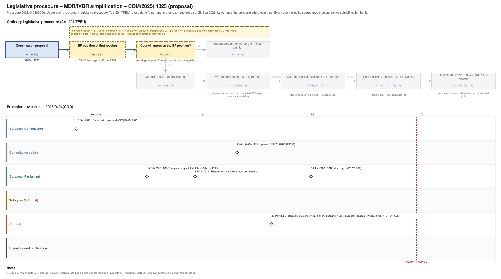

← All procedures · Regulation timeline
Procedure 2025/0404(COD), ongoing, as of 25 Sep 2026. Drawing: SVG · PNG · PDF (A3) · draw.io

| Date | Actor | Event | Document | Source |
|---|---|---|---|---|
| 2025-12-16 | European Commission | Commission proposal (Art. 294(2) TFEU) | COM(2025) 1023 | Cellar (CELEX 52025PC1023) |
| 2026-02-13 | European Parliament | SANT rapporteur appointed (Oliver Schenk, PPE) | EP Open Data API, procedure 2025-0404 (participation RAPPORTEUR) | |
| 2026-03-25 | European Parliament | Referral to committee announced in plenary | EP Open Data API, procedure 2025-0404 (REFERRAL) | |
| 2026-04-29 | Consultative bodies | EESC opinion | CELEX 52025AE4298 | Cellar procedure file 2025/404 |
| 2026-05-28 | Council | Regulation to simplify rules on medical and in vitro diagnostic devices - Progress report | ST 9114/26 | Cellar procedure file 2025/404 (Council register) |
| 2026-06-30 | European Parliament | SANT draft report | PE787.987 | EP Open Data API, procedure 2025-0404 (COMMITTEE_TABLING_REPORT) |
| Date | Document | Kind | Subject |
|---|---|---|---|
| 2026-03-13 | ST 7161/26 | council-note | cluster 1 |
| 2026-03-23 | WK 4453/26 | council-note | Commission presentation |
| 2026-04-21 | WK 5589/26 | council-note | Regulation to simplify rules on medical and in vitro diagnostic devices - Commission presentation on cluster 2 - Support to the regulatory system |
| 2026-04-27 | ST 7253/26 | council-note | cluster 3 |
| 2026-04-29 | CELEX 52025AE4298 | opinion | Opinion of the European Economic and Social Committee – Proposal of the European Parliament and of the Council amending Regulations (EU) 2017/745 and (EU) … |
| 2026-05-07 | WK 6502/26 | council-note | Regulation to simplify rules on medical and in vitro diagnostic devices - Commission presentation on cluster 3 - Notified bodies, classification and conformity … |
| 2026-05-18 | WK 6846/26 | council-note | Meeting of the Working Party on Pharmaceuticals and Medical Devices - Flash from the Presidency |
| 2026-05-21 | WK 7154/26 | council-note | Regulation to simplify rules on medical and in vitro diagnostic devices - Commission presentation on cluster 4 - Post-market surveillance, vigilance and … |
| 2026-05-28 | ST 9114/26 | council-progress-report | Regulation to simplify rules on medical and in vitro diagnostic devices - Progress report |
| 2026-06-03 | WK 7872/26 | council-note | Regulation to simplify rules on medical and in vitro diagnostic devices - Commission presentation on cluster 6 - Interplay with the AI Act, dedicated … |
| 2026-06-19 | ST 10284/26 | council-note | Exchange of views |
| 2026-06-24 | ST 10506/26 | council-note | Exchange of views |
| 2026-06-30 | PE787.987 | ep-draft-report | DRAFT REPORT on the proposal for a Regulation of the European Parliament and of the Council amending Regulations (EU) 2017/745 and (EU) 2017/746 as regards … |
| 2026-07-02 | WK 9801/26 | council-note | Meeting of the Working Party on Pharmaceuticals and Medical Devices - Presentation by the Presidency |
| 2026-07-16 | WK 10612/26 | council-note | Meeting of the Working Party on Pharmaceuticals and Medical Devices - Presentation by the Presidency |
| 2026-07-28 | WK 10875/26 | council-note | Meeting of the Working Party on Pharmaceuticals and Medical Devices - Presentation by the Presidency |
{kind=link}
{kind=link}